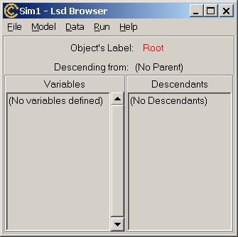
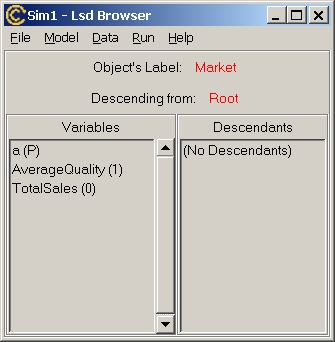

Writing a Lsd Model
This help page offers a step-by -step tutorial to create a simple model.
If not already done, users are invited to read the tutorial
1 for an introduction to Lsd and tutorial
2 on using Lsd models before reading this tutorial.
Introduction
A Lsd model is composed by:
-
Model equations: chunks of very simple programming language code
for each Variable, much like the definition of a mathematical expression
in a difference equation model;
-
Model structure: a hierarchical collection of entities, called Objects.
Each Object contains Variables, Parameters or other Objects; the Variables
are associated to an equation, that can use the values of other Variables
or Parameters of the model.
-
Model configuration: the initial values used in a simulation run
at the very first time step to kick off the simulation (e.g. the values
of Parameters, the number of Objects, the number of time steps etc.). Configurations
contain also information on the number of time steps, which data must be
saved etc.
Practically, this means to create a computer program that includes a lot
of technical code (the Lsd system code) and the code specific for the model,
the equations. This program is then used for creating the model structure
and determining the initial values, which are stored in text files called
model configurations. At this point, the model users (as opposed to model
writer) can run the model program, load a configuration, run simulations,
look at the results, change configurations etc.
The create a model means therefore to write the code for the equations
and create the model structure; every other operation required to generate
a simulation model is performed automatically by either the Lsd model manager
(LMM) or by the Lsd interfaces, automatically generated with each model
program.
This tutorial lists the steps to be followed to create a Lsd model in
general. Click on the step number for detailed instructions to create an
example model.
| Step |
Operation |
Instrument |
Result |
| 1 |
Design a model |
Paper and
pencil |
Decide one or few equations for a prototype of the model, and the entities
to be represented. Sketch out the kind of results to investigate. |
| 2 |
Create a new model |
LMM |
Generate an "empty" model, that is, all the technical requirement to
build a model but with no equations' code contained in the equation file
(see LMM help). |
| 3 |
Insert equations |
LMM |
Fill the equation file with equations associated with Variables' labels.
Each equation is inserted independently, much like systems of difference
equations. The programming knowledge required is limited to the logical/mathematical
operations represented in the equation. See the help on Lsd
equation coding. |
| 4 |
Try to run the Lsd model program |
LMM |
Generate the Lsd model program, or, if errors occur, list the coding
errors (see LMM help).
LMM attempts to create a model program by compiling the equation file.
In case of syntactical errors in the equations' code LMM provides their
list and location in the equation file. |
| 5 |
Fix coding errors |
LMM |
Generate the Lsd model program (see
LMM help).
Using the list of errors provided after a failed compilation it is
possible to quickly fix the errors in the equations code. Note that errors
are listed along line numbers referring to the file where they occured.
LMM shows you the line numbers in the editor, so it is easy to spot the
location of the error. |
| 6 |
Run the Lsd model |
LMM |
Access Lsd interfaces (see
LMM help)
LMM launches the Lsd model program. This contains, besides the equations'
code used during a simulation run, all the interfaces to deal with a model. |
| 7 |
Define model structure (Objects, Variables, Parameters) |
Lsd |
Generate a configuration (see
Lsd help).
To define a model structure the modeller needs only to type in the
labels of the model elements. For a discussion on how to design
a model structure see here. |
| 8 |
Insert number of Objects and initial values |
Lsd |
Generate a configuration (see
Lsd help).
Given the definition of the model structure the Lsd interfaces generate
suited windows to insert the numerical values required to start a simulation. |
| 9 |
Define general simulation settings |
Lsd |
Generate a configuration (see Lsd
help).
Although provided by default, the modeller may want to determine the
number of time steps per simulation run, the values to be saved, the series
to be shown during the run, and other technical settings. |
| 10 |
Run simulation |
Lsd |
Produce results, or logical errors.
A simulation run produces the series for the data saved, but there
may be "logical" errors, that is, legal C++ and Lsd code that cannot be
executed given the state of the model in that moment. Examples of these
errors are dead-locks (two equations requesting reciprocally to be computed
before the other), or missing elements of the model (usually due to differences
in spelling between the equation code and structure labels). Lsd captures
these errors issuing suited messages (see
Lsd help). |
| 11 |
Fix logical errors |
Lsd |
Find offending code in the equations.
In most cases the error messages issued by Lsd allow to quickly find
the line in the equation's code that caused them, since the fatal errors
issue messages in which the offending equation is reported (see
Lsd help). |
| 12 |
Analyse the Simulation Results |
Lsd |
Observe the data produced by a simulation (see Lsd
help).
The data saved during a simulation are loaded in the Analysis of Result
module to produce plots, statistics, export data etc. |
| 13 |
Test different configurations |
Lsd |
Produce different configurations.
Generally starting from a fresh configuration (not one obtained after
a simulation run), change the initial values of the simulation, saving
the configuration with different values to test the behaviour of the model
in different conditions (see here for changing
model's values, or here for simulation
settings). |
| 14 |
Create the model report |
Lsd |
Create a HTML file reporting the model structure and the interdependencies
between model elements.
The report shows which item is used in each equation's code. The very
equations' code is also included in the report. The report is extremely
useful to understand the actual computations of a model. |
| 15 |
Extend the model |
LMM and
Lsd |
Add new elements to the model, adding also the equations for the new
Variables. Each time a new equation is involved the model need to be re-compiled.
See the Lsd equation manual for more
detailed on the Lsd coding language. |
The model you have created can be distributed to any Lsd user by just
sending the directory where the model is contained. The user will have
all the code and the documentation to repeat your simulation, understand
them and possibly extending the model.
1 - Design a model
The design of a model must start with the most simple strucure, to be gradually
complicated exploiting the possibility to use indifferently Parameters
or Variables in equations code, to transform a Parameter in a Variable
by simply adding the equation (and to control for any error), and in general
to extend gradually a model without affecting previous parts, even when
these are connected to the new code.
Let's consider a model where a group of firms compete on a market on
the basis of the quality of their product. The driving equation is, for
each firm:
-
Salest = Salest-1*{1 + a*(Quality/AverageQualityt-1
-1)}
That is, the sales of each firm remain identical if the quality of its
product is identical to the average, or changes of "a" percentage points
in respect of the ratio quality over average quality.
The equation for the average quality must obviously be:
-
AverageQualityt = sumi{Qualityi * Salesi/TotalSales}
with
-
TotalSalest = sumi{ Salesi}
Note that in the first equation for Sales we use AverageQuality
at time t-1. This is to avoid a dead-lock. This would happen if the equation
for Sales required the most recent value of AverageQuality,
which in turn requires Sales which cannot be computed.
Concerning the structure of the model, we decide to use several Objects,
called them Firm, containing the values for Sales and Quality.
The data common to every firm (a, TotalSales and AverageQuality)
will instead be placed in a single Object (say Market) containing
the Firm Objects.
return to the tutorial list
2 - Create a new model
Start LMM (in Window from menu Start/Programs/Lsd/LMM). In LMM choose
menu Model/New Model. Type a name (e.g. "mymodel"), a version number
and a directory where to locate the model. The obvious requirement is that
there is no another model with the same name and version number, or the
directory is already used.
You are now shown the equation file for a new model called "mymodel".
The equation file is endowed with all the technical requirements for the
equation file to be included in Lsd model program. You need to fill in
the equations for your model (in between the two lines MODELBEGIN and MODELEND.
From now on, all the operations in LMM contained in menu Model
(e.g. run, debug, show the equation file etc.) will be referred to this
model.
return to the tutorial list
3 - Insert equations
This operation is the core of writing the model, since it tells the simulation
program how each Variable should produce a new value at each time step.
You can copy the code for the equations presented here (the lineS with
these fonts) or type it manually. Don't bother for the colors, which
do not have any influence on the actual working of the code. Consider that
LMM offers guided shortcuts to insert the most frequently used Lsd functions.
The list of Lsd functions that you can insert in your equation file is
activated from menu Model/Insert Lsd Script (Control+i). See the
LMM manual on this.
Let's use this structure to write the type in the equation the code
for the Variable Sales (you can select the following text for the equations,
up to the last "}" aftet the goto end; statement, copying
with the menu Edit/Copy in Netscape and then pasting in LMM). The
equation code for Sales is:
EQUATION("Sales")
/*
Level of sales:
Sales[t]=Sales[t-1]*{1+a*(Quality/AverageQuality-1)}
The sales of a firm are adjusted in respect
of the ratio between firm's own Quality and the
average quality.
*/
v[0]=V("a");
v[1]=VL("Sales",1);
v[2]=V("Quality");
v[3]=VL("AverageQuality",1);
RESULT( v[1]*(1+v[0]*(v[2]/v[3]-1)) )
Let's see what the equation does. The first line indicates that this
code is the equation for the Variable Sales. Then we have placed a comment,
without any use for the working of the equation, but helpful for documentation
(this comment is automatically searched by the system and used in the model
report).
The next 4 lines in the equation collect the data necessary to compute
the value of Sales. The v[0], v[1], etc. are temporary C++ variables used
to store intermediate results during computation. The Lsd function V("label")
simply returns the value of the item "label") in the model. The VL("label",
lag) function is the same as V("label"), but request the past value of
"label", with 'lag' lags.
For example, in v[1] it is stored the value of the previous time step
value of Sales.
The last line contains the result, that is, the numerical value that
Sales will take after its equation has been computed.
Note that V("label") works identically whether the value searched
is a Parameter (like a) or a Variable. Moreover, the function is
identical for data that will be stored in different Objects. In fact, Sales
is a Variable that we will place in an Object referring to firms, while
AverageQuality will be located in another Object, Market.
Now we turn to write another equation. Place the cursor after the last
line or before the first line of Sales (the order in which the equations'
code is placed in the equation file does not matter).
The equation for TotalSales is:
EQUATION("TotalSales")
/*
Sum of the Sales from each Firm
*/
RESULT( SUM("Sales") )
The equation for AverageQuality is:
The equation initialise to 0 the value of v[0]. The equation is made
of a cycle for, that is, a block of code (in between brakets) is
repeated until a given logical condition is true (see LMM
help on this topic). The header of the cycle (the line with for(...))
is made of three fields:
-
a command to be executed before of the first run of the cycle, and never
again;
-
the condition for repeating the cycle;
-
a command to be executed after each cycle and before the control of the
condition.
The cycle for is composed by three fields, separated by a semi-colon:
-
cur=p->search("Firm");
This means that the system must search for the first occurrence of
the Object Firm, and store it in the temporary Object pointer cur;
-
cur!=NULL;
This means that the cycle must be repeated as long as cur
contains an Object, and be interrupted when cur is empty;
-
cur=go_brother(cur)
This means that after a cycle, and before controlling for the condition
in the second field, the pointer cur must be assigned the Object
next to the Object it currently contains. The function go_brother(cur)
returns an empty value (NULL) if there are no more Objects after cur.
The last equation, for AverageQuality, is similar to the previous
one:
EQUATION("AverageQuality")
/*
Average quality of products, weighted with
the sales.
The equation scans all the Object Firm summing
up the product Sales x Quality and dividing for
the total sales.
*/
v[0]=V("TotalSales");
v[1]=0;
CYCLE(cur, "Firm")
{//assign to pointer 'cur' all the Firm
v[2]=VS(cur,"Sales"); //compute Sales
for the current Firm
v[3]=VS(cur,"Quality"); //compute
Quality for the current Firm
v[1]=v[1]+v[2]*v[3]; //cumulate the
product Sales times Quality
}
RESULT(v[1]/v[0] )
This equation deserves some attention. Firstly, we store in v[0] the
value of total sales. Then, we initialize v[1] to 0. The next lines contain
a cycle so that make a temporary "pointer" (that is, a temporary variable
containing Objects instead of numerical values) to contain cyclically all
the Objects named Firm. The cycle repeat the commands between the '{' and
'}' for all the Object Firm in the mdoel. In each cycle we make three operations:
collect the value of Sales and Quality for the firm contained in the pointer,
add their product to v[1].
Note that we use the Lsd function VS(pointer, "label"). This function
asks specifically the value of "label" to the Object 'pointer', instead
of generally search one copy of "label" in the model.
Now you have inserted the equations for your model. For more information
on the Lsd equations' language see the Lsd
help on this).
return to the tutorial list
4 - Create the Model program
Save the equation file (menu File/Save). Now you need to create
a model program including the general Lsd system code and the model specific
equation file. LMM will do all of this automatically: select the item Run
in
menu Model. Now the system compiles the new model program, with
two possible output: either the Lsd model program starts (showing the Lsd
Browser), or the compilation fails. In this second case you are shown the
error messages issued by the compiler (see next paragraph).
return to the tutorial list
5 - Fix the compilation errors
When compiling the system controls that the commands written in the equation
files are legal C++ code. If the compilation fails LMM shows a window containing
the output of the compiler, that is the list of errors. Note that you can
always see the error messages choosing the item Show Compilation Results
in
menu Model. The errors typically reports a line number where the
error was found (help on compilation errors).
The LMM editor permits to reach a specific line of the equation file using
the item Goto Line in menu Edit.
return to the tutorial list
6 - Access the Lsd interfaces
If the compilation succeeds the Lsd program shows its interface:

When the Lsd model starts it is empty. That is, there is no configuration
loaded in the model program, although the program contains the equations'
code embedded in its C++ core. The interface is composed by the Browser,
which shows one Object (the Object shown is indicated in red along "Object's
label"). The Lsd Browser shows two list boxes, for the set of Variables,
on the left, and for the Objects descending from the currently shown one,
on the left. Currently, the Browser shows the Object Root, included
by default in any Lsd model, which contains no Variables and no descending
Objects.
The Lsd model program starts also a new window, called Log.
This will contain messages from the system, when necessary. For the moment
you can ignore it.
The Browser contains several menus. Modellers are interested only in
the menu Model to determine the model structure, while the other
menus are used to manage different aspects of the simulation that also
users may be interested in changing (like initial values, number of time
steps, etc.). The structure of the model and the initializations are saved
in configurations files (extension .lsd) that can be loaded to run directly
a simulation run.
return to the tutorial list
7 - Define the model structure
The model structure is always defined in respect of the Object currently
shown in the Browser. The structure we want to produce is a Market containing
several Firm. In particular, we want the Object Root to contain
an Object Market, which in turns contain anObject Firm (for
the moment we ignore the numerical aspects of the model, like how many
Firms).
In Market and Firm we need to define several Variables and
Parameters. Follow the instructions below:
-
Choose the item Add Descending Obj. in menu Model to add
an Object to Root. Type the label Market and press Ok
(you may add a description, but for the moment leaves the box empty). Now
the Browser shows Market in the list of descendants. Notice that
a new window has appeared, titled Lsd Model Structure. This is a graphical
representation of the model (ignoring Root).
-
Double-click on Market to move the Browser to show Object Market.
If
you typed the wrong label instead of Market you can click on its
name in the header of the Browser window. If you remove completely the
label, leaving an empty string, the Object is removed altogether.
-
Market
is created with no Variable or Parameters. We need Market
to contain one Parameter, a, and two Variables, TotalSales
and
AverageQuality.
Choose the item Add a Parameter
in menu Model and type a.
Insert the Variable TotalSales choose menu item Model/Add a Variable.
When adding the Variable AverageQuality set to 1 the lag desired.
This is because we need to use AverageQuality
with lag 1 (in the
equation for Sales), and this must be signalled when the Variable
is created. Notice that the Browser window will list in the Variables list
box the elements added.
-
Control that the Browser appears as below (the order of Variables and Parameters
does not matter):

-
The list of Variables shows the label of the items followed by (P), if
it is a Parameter, and by an integer if it is a Variable. The integer indicate
the number of lag values that the Variable must kept during a simulation
step.
-
If you made a mistake inserting an element, double-click on the wrong item.
You are shown the list of options for the item. Double-click on the label
of the item to edit it to fix the error. Inserting an empty label will
remove the item altogether.
-
The order in which the items appear in the Variables' list of an Object
is not relevant (it follows the order of insertion).
-
Create now the Object Firm, as descending from Market (choose
item Add Descending Obj. in menu Model and type Firm).
The Browser will list Firm as descending from Market. Double-click
on Firm moving the Browser to show this Object. Notice that the
Lsd Model Structure window has been updated showing Market as containing
Firm.
-
In Firm (when the Browser shows it), use the same process (menu
Model
and
Add
a Variable or Add a Parameter) to create the Variable
Sales
(it
needs one lag) and the Parameter Quality.
Now the model structure is complete. It may still contain few mistakes:
these will be corrected later, when the simulation manager will issue errors.
Save the configuration from menu File/Save.
return to the tutorial list
8 - Insert initial values and the number of Objects
The model structure is still not sufficient to run a simulation: we inserted
only the general structure, but the model need to specify also the values
to be used for the Parameters and for the lagged Variables during the very
first time steps of the simulation. And this depends also on the number
of Objects placed in the model, which are, by default, only one Object.
Let's begin to see how we can specify number of Objects for each type.
Choose item Set Number of Objects in menu Data (option
All
Object Number). This window shows the whole hierarchy of Objects, up
to the hierarchical level indicated (see the Lsd
help on this for details on this window). Click on the text (click
here to see descendants) to increase the hierarchichal level shown,
so to see also the Object Firm. Click on the number shown on the
side of Firm and type 10. For your interest, try also to increase
the number of Objects Market to 3: you will see three groups of Firm,
one for each Market. Before exiting return to only 1 Market.
Notice that removing the Objects the system offers you the possibility
to remove some specific instance, or the ones at end of the series. Click
on Exit to return to the Browser.
Now we have the model configured with 1 instance of Object Market
and
10 Object Firm. To run a simulaiton we need to determine the values
of the Paremeters and of the lagged Variables to be used at the first time
step of a simulation run, that is the initial values. Setting the number
of Objects can be done for the whole model at once. Instead, setting the
initial values must be done for one Object type per time. Move the Browser
to show the Object Firm
(you can double-click on the symbol representing
Firm in the graphical representation of the model). Choose the item Initial
Values in menu Data. The window is like a spreadsheet, listing
the different instances of Objects on the columns and the Parameters or
lagged Variables on the lines. You can manually type in each cell a number
(pressing Return on your keyboard to move to the next cell), or use the
Set
All button to set the whole values for a line (see the Lsd
manual on this). For the Objects Firm we need to set the lagged
values of Sales and the level of Quality. Set the same value
for
Sales
for all firms (say 100). To do this using the Set All
button,
type 100 and select the option Equal To. For Quality set
increasing values from 1, 1.1, 1.2 etc. To do this, select the option Increasing,
and type 1 as starting value and 0.1 as step.
Click on Ok when you have finished to set the initial values for Objects
Firm,
move the Browser to show the Object Market (click on the label
Market
in
the Browser on the left of the text "Descending from:
..."), and
choose Initial Values in menu Data. You can obtain the same
result by clicking with the right button of the mouse on the symbol for
Market in the graphical representation. Notice that the Variable TotalSales
does not appear in the window. In fact, this Variable does not need to
be initialized, since it is never used as lagged value. Type 0.05 for the
Parameter a and 1.5 for AverageQuality
with lag 1.
return to the tutorial list
9 - General Simulation Settings
The model is now potentially ready to run a simulation, since it contains
the equations, the model structure and the initial values. However, by
default Lsd models do not save the data produced during a simulation, so
you need to specify the data series you want to observe (this information
is stored in the configuration file, so you do not need to specify the
series to be saved any time). Let's save the series for AverageQuality
and
TotalSales
in
Market,
and Sales in Firm. To select a Variable to be saved double-click
on its label contained in the list of Variables in the Browser (when this
shows the Object containing the Variable of interest, of course). This
shows a window with the label of the Variable and several items (see the
Lsd
manual on this topic). Check on the option "To Save". Concerning
the Variable Sales
in Firm, check on also the option "Run Time
Plot". Now the model will save during every run all the data produced
by the Variables marked. These data can be accessed after the simulation.
Moreover, the data for
Sales
will produce during the simulation,
at run time, a plot showing their values.
Concerning Variable AverageQuality, check on also the option
Debug.
This will interrupt the simulation at this equation when the Debug Mode
is set on (users can activate the Debug Mode any time during a simulation,
or it can be set on from the very beginning of the simulation run).
When starting with no model loaded, the time steps for a simulation
run are set to 100. To change this choose item Sim.Setting in menu
Run.
This will show a window with several options (see the Lsd
manual on this topic). In the cell labelled Simulation Steps
type 2000.
Now the configuration to run a simulation is complete. Save the configuration
choosing item Save in menu File, and typing a name for the
configuration, for example trial1.
return to the tutorial list
10 - Run the simulation
To run a simulation you just need to choose the item Run in menu
Run.
This will show a summary message; choosing Ok confirms to run the
simulation.
If there are errors the simulation is interrupted immediately, or the
Lsd error manager issue few messages offering the modeller with several
possibilities to investigate the error (see Fix logical
errors below). If the simulation runs smoothly, you will see a new
window, the Run Time Plot, showing the series of the data set with
this option (Sales in the example). If you did not set any Variable
to appear in the Run Time Plot, then the Log window will
signal all steps that have been successfully completed.
During a simulation run the Log window can be used to control the simulation,
using the four buttons in the lower part of the window:
-
Stop: end the simulation when the current time step is finished;
-
Fast: continue the simulation without issuing the time step lines
in the Log window (only if there is no Run Time Plot windows);
-
Observe: return to show the time step completed (only if there is
no Run Time Plot windows);
-
Debug: set on the Debug Mode, temporarily interrupting the simulation
and allowing to explore the status of the model.
After a simulation run the model remains with the status of the last time
step of the simulation. That is, every Variable has the values resulting
from the last time its equation have been computed. Lsd prevents to run
immediately new simulation exercise with such values as initial values.
This, in fact, would overwrite the configuration file used to run the original
simulation. However, the after-simulation configuration can be saved (possibly
with a different name). And therefore this new configuration can be loaded
and run, like any configuration.
Although it is not strictly necessary for writing Lsd models, it may
be interesting to know what happens when a simulation is run. The operations
of a simulation run are:
-
Save the configuration file (beware that every change to the model overwrites
the pre-existing configuration)
-
Set the simulation time counter to 1
-
Select the Root Object as current Object
-
Compute the equation for all the Variables in the current Object
-
Set the descendants of the current Object as new current Object and return
to 4.
-
(when all Objects of the model have been explored) increase the time counter
and return to 3.
Note that the cycle decribed above does not correspond necessarily to the
actual order of execution of the equations. In fact, it is possible that
the computation for an equation in an upper position of the model (say
AverageQuality
in
Market)
requires other Variables to be computed first (Sales in Firm
in the example). But the flow of updating described above is such that
the equation for AverageQuality begins to be computed before
Sales are updated. Lsd records every value for a Variable along
with the time step in which it was computed. Therefore it knows that Sales
need to be updated before completing the equation for AverageQuality,
and automatically computes the equation for each Variable Sales
before completing AverageQuality.
When a lower Variable already computed is reached by the standard simulation
cycle, or it is requested again by another Variable, Lsd does not re-compute
it, but uses the value already computed the first time in that time step.
Modellers can also decide to use Variables that, instead having an
equation assigned, has a function. This is identical to an equation, but
includes also few lines such that the value of the Variable is recomputed
as many times as it is requested, even many times during a time step.
return to the tutorial list
11 - Fix logical errors
During the compilation it is possible to discover errors in the model code
(i.e. the equations) due to illegal C++. But only during a simulation it
is possible identify errors due to the design of the model. If there is
an error Lsd writes a message in the Log windows. Typical errors are:
Data not loaded
Lsd found that some initial values (for Parameters or lagged Variables)
have not been defined by the user. The error message is:
Data for XXX in Object YYY not loaded
This happen either when a Parameter or lagged Variable is inserted,
or when the number of Objects is increased, but the user did not set any
initial value for it. In both cases Lsd assign a default value that must
be, at least, confirmed before being able to run a simulation.
To fix the error re-load the configuration (menu File/Re-Load).
Move the Browser to show the Object YYY containing the un-initialized elements.
Choose item Initial Values in menu Data. Even if the data
are not changed, only opening this window is considered as a confirmation
of the values presented.
Variable not found
This problem arises when a Variable is missing or, more frequently, when
it is spelled differently in the equations' code and in the model configuration.
The error message in the Log windows gives indications on where the error
occurred. There are two possible types of errors. If the error is:
Equation for XXX not found
it means that the Variable defined in the model configuration does not
correspond to any equation block in the equation file. This error is also
caused if you defined a Variable instead of a Parameter (to Lsd, it is
a Variable without equation). For example, if you defined a as a
Variable it appears as
a (0)
in the left list box in Market, instead of
a (P)
as it should be for Parameters. See below
how to correct this error.
If the error is:
Search for XXX failed in YYY
Fatal error detected at time 1.
Offending code contained in the equation for Variable:
ZZZ
it means that the Variable (or Parameter) XXX requested in the equation
for ZZZ was not found. You likely mispelled XXX in the equation's code.
To correct the error you need either to
change the equations code, or to change the label of the element in the
model structure. In any case, close the Lsd model program (choosing Abort
if the error message is of the second type). You can change the equations'
code, if necessary, using LMM. Save the equations' file (menu File/Save)
and run the Lsd model program (menu Model/Run). When the Lsd model
program starts, load the configuration (menu File/Load) and choose
the configuration file that caused the error. Now the model is defined
exactly as when you started the simulation, but with the fixed equation
code. If you want to edit the model structure definition (e.g. change the
label) move the Browser to show the Object containing the Variable to be
changed. Double-click on it, and, in the option window, double-click on
its label to change as necessary. After the changes try to run the simulation
again (menu Run/Run).
Lag error
This error causes a message like:
Lag error: Variable XXX requested lag K but available
only H
This means that the Variable XXX in the equation was requested with
a lag superior than that available (typically, it is requested with 1 lag,
but it was defined without any lag, or lag 0). Again, it may be an error
in the equations' code, or in the model structure definition. Follow the
instructions on how to correct this error.
Dead lock error
This error occurs if an equation (say for X) requires the value of another
Variable (Y) whose equation, in turn, requires the computation of X. Clearly,
one of the two Variables need to use a call to the other equation with
a lagged value.
For example, if the equation for Sales contained the request
for AverageQuality with no lag, the message issued would
be:
Dead lock! Variable:
AverageQuality
requested by Object:
Firm
Fatal error detected at time 1.
Offending code contained in the equation for Variable: Sales
List of Variables currently under computation.
(the first-level Variable is computed by the simulation manager,
while possible other Variables are triggered by the lower level
ones
because necessary for completing their computation)
Level Variable Label
3 Sales
2 TotalSales
1 AverageQuality
0 Lsd Simulation Manager
The lines highlighted show the two Variables involved in the dead-lock.
To fix the error set one call with a lag, according to the logic you
want to use in the model.
return to the tutorial list
12 - Analyse the Simulation Results
After a simulation users can use the module for analyse the simulation
results. Choose item Analysis Result in menu Data. This will
prompt a window asking if you want to use the data from the latest simulation
run or from a file containing data saved from another simulation (if there
was no such a window, it means that there are no data from simulation stored
in memory, and the system automatically search for a file with simulation
data). Choose Simulation to use the data from the simulation.
The window for the analysis of results contains three main boxes, and
few other items. The box on the left, labelled Series Available
lists the data saved. For each series is reported the name of the Variable,
a code, and the initial and final time step in which the Variable existed.
The code contains as many digits as the hierarchical level of the Object
containing the Variable, so that, for example, the Varibales for the third
Firm has the code 1_3, meaning first Market and third Firm.
The window is operated by moving one or more elements from the left
box to the one in the middle (Series Selected). The different commands
concern only the series contained in this box.
Users can plot the series or ask for the descriptive statistics, both
as time series or as cross-section analysis (in this latter case a series
is made by the values of all the Variables listed in the middle box at
a given time). The plots generated are listed in the right box (Graphs),
and can be brought in the foreground by clicking on them. To raise the
main window, frequently hidden behind a stack of plot windows, double click
on any of such windows. See the Lsd manual on
the detail use of this module.
return to the tutorial list
13 - Test different configurations
Exit from the Analysis of Result module (menu Exit). Re-load the
configuration used for the simulation run (menu File/Re-Load, or
use the shortcut Ctrl+w). Save the configuration with a different name
(e.g. trial2). Now you can test different configurations, setting the number
of entities to different values, changing the initial values, changing
the simulation settings etc. For a detailed account on these aspects see
the tutorial 2.
return to the tutorial list
14 - Create Model Report
Understanding the functioning of a model means to know the elements of
the model (Objects, Variables and Parameters) and how they relate to each
other. This means to know the structure of the model and all the connections
between them like, for example, in which equation(s) a Parameter is used.
This is of importance both to the modeller and to the user. For the modeller
it is the crucial information for modifying a model; for model users it
is the best way to understand how a model is implemented. If a model report
exists, it will always be available to the model users for documentation
(from the menu Help/Model Report). The model report is a HTML file
(readable with any web browser) created automatically by the system at
request of the modeller.
To create the report it is necessary to tell the system the equation
file name, menu Model item Equation File, and indicating
the filename suggested in the resulting window. Lsd model programs permit
to add to each item a textual description, that appear in their option
window and are used in the model report. However, it is also possible to
request the system to automatically induce some of the relevant information.
To do this, use the command in menu Model / Generate Automatic Documentation.
After this, click on a Parameter or a Variable to see the results.
Then choose the item
Create Model Report in menu Model
and the system pops up a window where the modeller can choose the options
concerning the report. Confirming the creation of the report makes the
system create the report's file (or overwrite the existing file). After
the creation the report is shown. It is always possible to access the report
from its indication in the menu Help (obviously, only if available).
return to the tutorial list
15 - Extend the model
A crucial rule in developing simulation models is to proceed gradually
incrementing the elements of a model. Lsd allows a very easy extension
of an existing model. As exercise, let's add a Variable to compute the
market shares of firms.
For this we need to add an equation to the equation file, and to add
the relative Variable in the model.
Close the Lsd model program and return to LMM, open the equation file
for the model (menu Model/Show Equation), and place the cursor in
a legal position for a Lsd equation (within the lines MODELBEGIN and MODELEND
and outside the block for an existing equation).
Press the keys Ctrl+Shift+e to insert an equation (or use the normal
way through the menu Model/Insert Lsd Scripts), for the Variable
"ms".
The block for the equation is:
EQUATION("ms")
/*
Market shares
*/
v[0]=V("Sales");
v[1]=V("TotalSales");
RESULT( v[0]/v[1])
Now you have inserted the new equation saying that the market shares
(Variable "ms") must be computed as the ratio between Sales and TotalSales.
The whole equation should be like:
Save the equation file (menu File/Save, or press Ctrl+s), and
run the model, menu Run/Run. The system automatically acknowledges
that the file is changed, and therefore recompiles the whole Lsd model
program.
When the Lsd Browser window appears, open one of the configuration files
(menu File/Load). Note that you may run the model as before since
the new code does not interfere with the previous equations.
Move the Browser to point to the Object Firm (double-click on
the symbol for Firm in the graphical representation). There insert
the new Variable "ms": choose menu Model/Add a Variable (or press
Ctrl+v), and type "ms", with 0 lags.
As last operation, double-click on the newly insereted "ms" Variable
in the list of Variables for Firm and check on the To Save
option, so to include the values of the market shares Variables in the
data saved during the simulation runs.
Now you can run a simulation and observe the results
return to the tutorial list